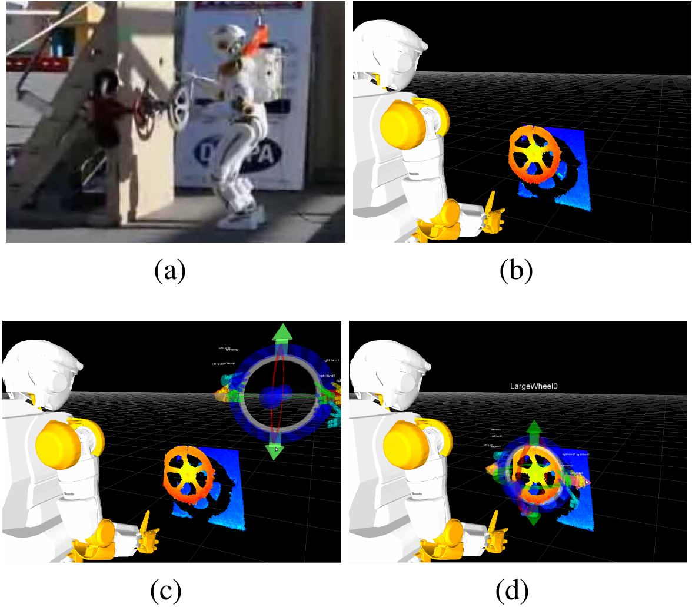
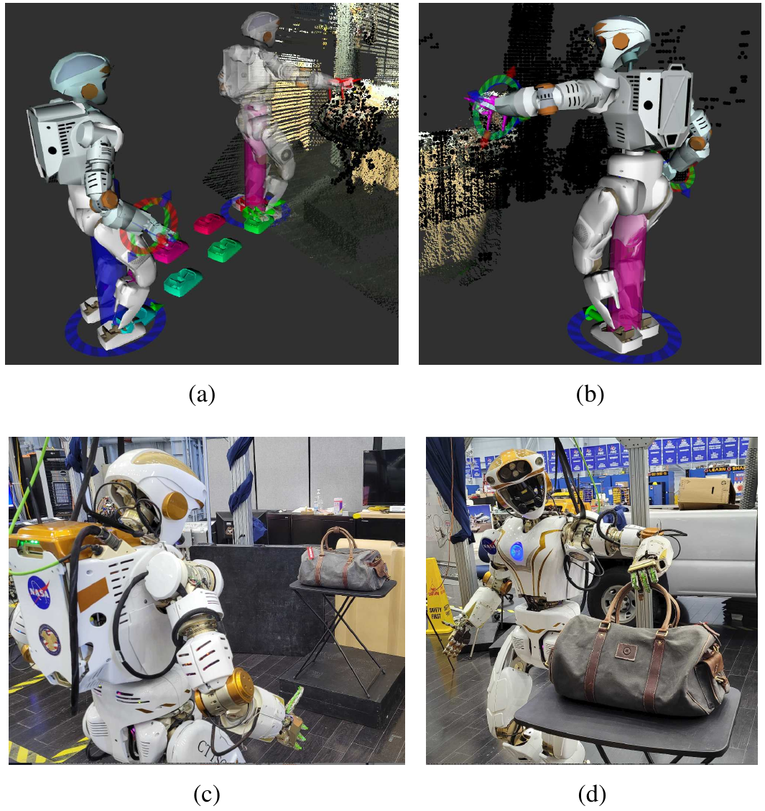
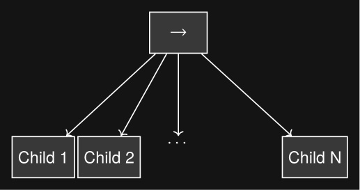
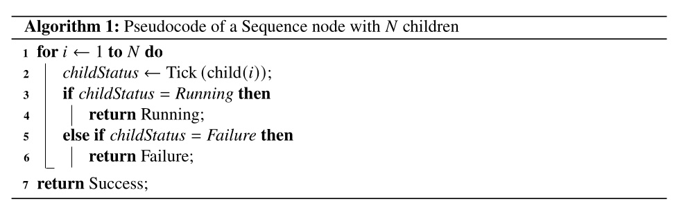
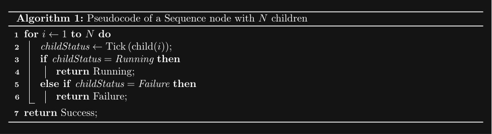
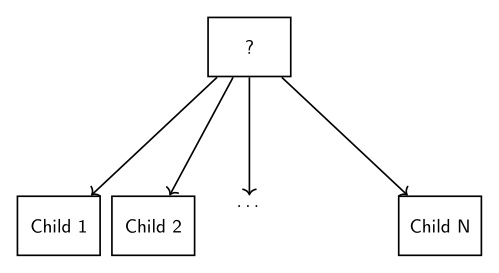
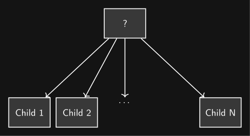
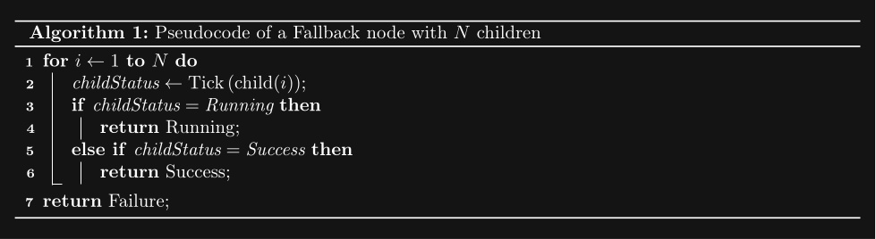
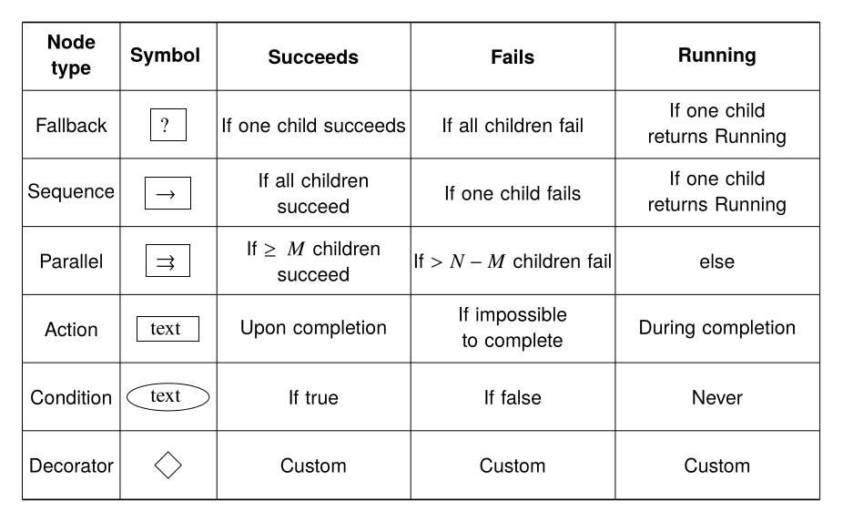
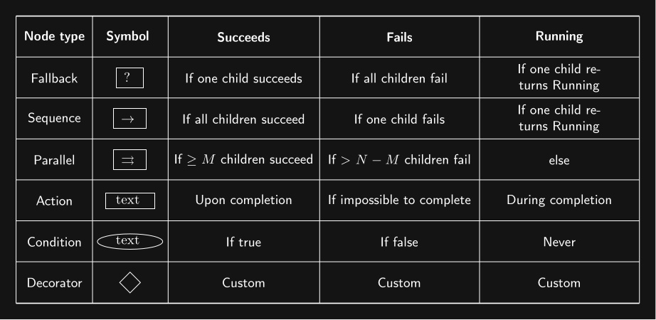

3.1. Architectural Foundations
Affordance Templates, Behavior Trees, and Coactive Design form the strongest theoretical foundations of the work in this thesis. Affordance Templates provide a theoretical foundation for reusable behavior with respect to recurring tasks in the environment. Behavior Trees provide a data structure for organizing behavior functionality and logic. Coactive Design poses three questions that drive the design of a system to leverage the synergistic opportunities of human-robot teams.
3.1.1. Affordance Templates
The Affordance Template Framework [19], [21] was developed and used for the DARPA Robotics Challenge Trials in 2013. Affordance templates were first presented in the literature in 2014. The work was performed on NASA’s Valkyrie humanoid robot, where it demonstrated a valve turning task. The Affordance Template framework provides a way to parameterize and reuse robot loco-manipulation behaviors with respect to environmental affordances. A number of affordance templates were developed for use on the Valkyrie robot including templates for door opening, walking, hose mating, valve turning, and ladder and stair climbing.
The word “affordance” comes from James Gibson’s 1979 book, The Ecological Approach to Visual Perception [20]. It is used in the sense that an environmental feature “affords” an action. For example, the ground is an affordance for walking and a handle is an affordance for turning. An affordance template is a robotics construct providing a theoretical foundation for defining and parameterizing robot behavior with respect to environmental affordances. This makes it one of the most consequential design inspirations for our work.

In 2022, Hart et al. [24] generalized and further demonstrated the power of this approach, as shown in Figure 3.3. Tools for footstep planning, motion planning, stance generation, and grasping were incorporated to enable increased autonomous functionality. This was demonstrated on NASA Valkyrie for integrated task execution, including car-door interaction and explosive-device handling [51]. In this work, the operator could load, edit, and execute templates at runtime.
Related works on affordance primitives [13], [14] emphasize constrained interaction motions such as turning a valve or closing a drawer. The screw primitive in particular shows how a reusable low-level action can capture a class of constrained manipulation motions without hard coding them.

3.1.2. Behavior Trees
Behavior Trees [53], [37] are a data structure that coordinates low-level actions through structured reactive task logic. They define logical operator nodes such as sequence, fallback, and parallel which work to control the execution flow of a behavior. Actions are performed by the leaf nodes which command the robot and gather environmental data. They provide reactivity through a ticking system in which each tick starts at the root node. This is in contrast to state machines in which each tick starts from the previous state. By continuously re-evaluating from the top down, from tick to tick there are pathways to ending up in very different parts of the tree without explicit connections between those parts.
A Behavior Tree is “ticked” from the root node at a constant frequency. The tick is a signal which propagates through the tree, causing nodes to evaluate or execute. Control nodes redirect the tick and condition and action nodes return results: success, failure, or running. A node is executed if and only if it receives ticks. If an action is underway, it returns running to the parent. When it is done it returns success or failure.
A sequence node is the most fundamental Behavior Tree control node. It runs each node in order while they are successful, as shown in Figure 3.4 and Algorithm 1.



A fallback node runs each node in order while they are failing. This is shown in Figure 3.5 and Algorithm 2.



The remaining types of nodes are summarized in Figure 3.6.


3.1.3. Coactive Design
The Coactive Design method [30] is an iterative process comprised of three main processes: an identification process, a selection and implementation process, and an evaluation of change process. The most complex process is the identification process, in which requirements, alternatives, and interdependence relationships are explored. A set of desired interdependence relationships are determined and selected for implementation. The result is then evaluated using human feedback and performance analysis. This methodology was used for the design and development of IHMC’s operator interface in the 2015 DRC [30]. A later analysis details how that methodology led to success in the competition [32].
Coactive Design treats human-machine systems as interdependent and emphasizes making the system observable, predictable, and directable, with interdependence analysis charts used to document those relationships. The architecture in this thesis is meant to be developed, debugged, and adapted by expert operators on real hardware. Coactive Design directly motivates the authoring and supervision interfaces in Current Architecture.
References cited on this page
[13] A. Pettinger, C. Elliott, P. Fan, and M. Pryor, “Reducing the teleoperator’s cognitive burden for complex contact tasks using affordance primitives,” in 2020 IEEE/RSJ international conference on intelligent robots and systems (IROS), 2020, pp. 11513–11518. doi: 10.1109/IROS45743.2020.9341576.
[14] A. Pettinger, F. Alambeigi, and M. Pryor, “A versatile affordance modeling framework using screw primitives to increase autonomy during manipulation contact tasks,” IEEE Robotics and Automation Letters, vol. 7, no. 3, pp. 7224–7231, 2022, doi: 10.1109/LRA.2022.3181732.
[19] S. Hart, P. Dinh, and K. A. Hambuchen, “Affordance templates for shared robot control,” in AAAI fall symposium on artificial intelligence and human-robot interaction, Arlington, VA, USA: AAAI, Nov. 2014. Available: https://ntrs.nasa.gov/citations/20140012413
[20] J. J. Gibson, The ecological approach to visual perception. Houghton Mifflin, 1979.
[21] S. Hart, P. Dinh, and K. A. Hambuchen, “The affordance template ROS package for robot task programming,” in Proceedings of the IEEE international conference on robotics and automation (ICRA), 2015, pp. 6227–6234. doi: 10.1109/ICRA.2015.7140073.
[24] S. Hart, A. H. Quispe, M. W. Lanighan, and S. Gee, “Generalized affordance templates for mobile manipulation,” in 2022 international conference on robotics and automation (ICRA), 2022, pp. 6240–6246. doi: 10.1109/ICRA46639.2022.9812082.
[30] M. Johnson, J. M. Bradshaw, P. J. Feltovich, C. M. Jonker, M. B. van Riemsdijk, and M. Sierhuis, “Coactive design: Designing support for interdependence in joint activity,” J. Hum.-Robot Interact., vol. 3, no. 1, pp. 43–69, Feb. 2014.
[32] M. Johnson et al., “Team IHMC’s lessons learned from the DARPA robotics challenge: Finding data in the rubble,” Journal of Field Robotics, vol. 34, no. 2, pp. 241–261, 2017.
[37] M. Iovino, E. Scukins, J. Styrud, P. “Ogren, and C. Smith, “A survey of behavior trees in robotics and AI,” Robotics and Autonomous Systems, vol. 154, p. 104096, 2022, doi: https://doi.org/10.1016/j.robot.2022.104096.
[51] S. J. Jorgensen et al., “Deploying the NASA valkyrie humanoid for IED response: An initial approach and evaluation summary,” in 2019 IEEE-RAS 19th international conference on humanoid robots (humanoids), 2019, pp. 1–8. doi: 10.1109/Humanoids43949.2019.9034993.
[53] M. Colledanchise and P. “Ogren, Behavior trees in robotics and AI: An introduction. CRC Press, Taylor; Francis Group, 2018. doi: 10.1201/9780429489105.